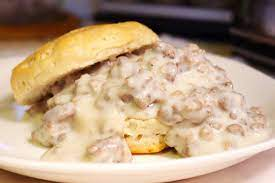

Time for Gravy!

This here is one of our finest homestyle recipes. This will send all the ladies to bed and all the cows to pasture!
Buckle up brother!
Ingrediants:
- Mars Dusted Flour : 1 Cup
- Buttery Moon Milk : 3 Cups
- Hagemendanor Butter : 1 Stick
- Pristine Ground Space Sausage : 1lb
Steps:
- Git your skillet nice and warm with 1/4 of your butter, then throw the sausge in the brown to brown!
- Add your spices to your taste, cook sausge too desired doneness.
- When the sausage is done, add in the rest of your better and flour. Make a little rue and make sure that flower gets cooked! About 3 minutes.
- When thats good and cooking, add in your milk slowly by little and stir to your desired thickness. Gravy will thicken as it cools down!
- Get your friends and family and get bloated!